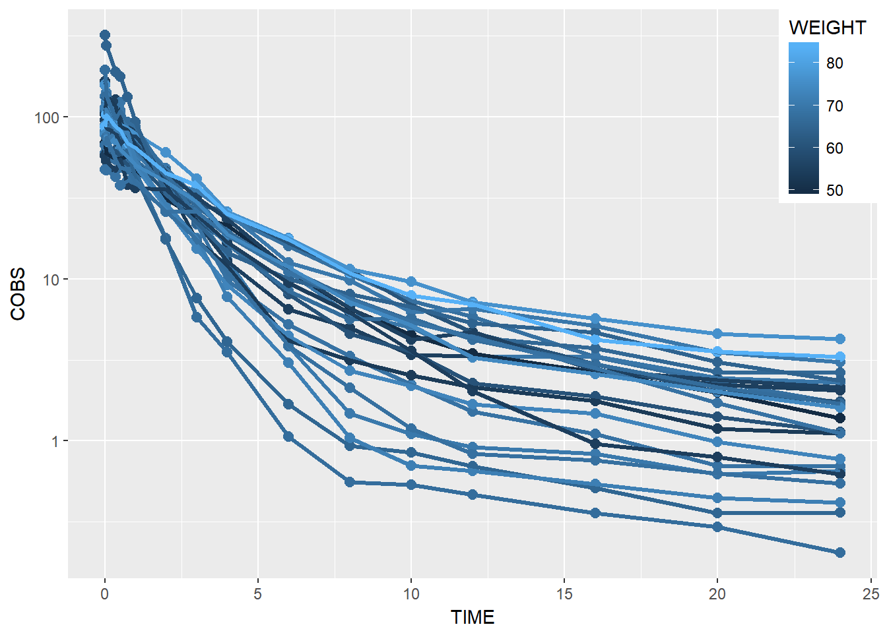

2 Introduction to ggplot2
library(PKPDmisc)
library(PKPDdatasets)
library(tidyverse)
#> Loading tidyverse: ggplot2
#> Loading tidyverse: tibble
#> Loading tidyverse: tidyr
#> Loading tidyverse: readr
#> Loading tidyverse: purrr
#> Loading tidyverse: dplyr
#> Conflicts with tidy packages ----------------------------------------------
#> filter(): dplyr, stats
#> lag(): dplyr, stats2.1 XY Plots
- For concentration-time plots filter only OCC 1 from dapa_IV_oral (in PKPDdatasets) for subsequent plotting
data1 <- dapa_IV_oral %>% filter(OCC == 1)- Basic Concentration-Time plot (point and lines)
data1 %>% ggplot(aes(x = TIME, y = COBS, group = ID)) +
geom_point() + geom_line()
- make points/lines bigger
data1 %>% ggplot(aes(x = TIME, y = COBS, group = ID)) +
geom_point(size = 2.5) + geom_line(size = 1.1)- add log transformation to y axis
data1 %>% ggplot(aes(x = TIME, y = COBS, group = ID)) +
geom_point(size = 2.5) + geom_line(size = 1.1) +
scale_y_log10()
- Add color by gender
data1 %>%
ggplot(aes(x = TIME, y = COBS, group = ID, color = GENDER)) +
geom_point(size = 2.5) + geom_line(size = 1.1) +
scale_y_log10()
BONUS: rename labels legend
data1 %>%
ggplot(aes(x = TIME, y = COBS, group = ID, color = GENDER)) +
geom_point(size = 2.5) + geom_line(size = 1.1) +
scale_y_log10() + scale_color_discrete(labels = c("Male", "Female"))
BONUS: move legend to top right
data1 %>%
ggplot(aes(x = TIME, y = COBS, group = ID, color = GENDER)) +
geom_point(size = 2.5) + geom_line(size = 1.1) +
scale_y_log10() + scale_color_discrete(labels = c("Male", "Female")) +
theme(legend.position = c(1, 1), legend.justification = c(1, 1))
- facet by race
Note, with facetting by race, the color becomes unnessary extra visual stimulus so we remove the color.
data1 %>%
ggplot(aes(x = TIME, y = COBS, group = ID)) +
geom_point(size = 2.5) + geom_line(size = 1.1) +
scale_y_log10() +
theme(legend.position = c(1, 1), legend.justification = c(1, 1)) +
facet_wrap(~GENDER)
BONUS: rename facet strips by name
There are a couple ways of doing this:
- on the fly mutate the the values to labels
data1 %>%
mutate(GENDER = factor(GENDER,
levels = c(0, 1),
labels = c("Male", "Female"))) %>%
ggplot(aes(x = TIME, y = COBS, group = ID)) +
geom_point(size = 2.5) + geom_line(size = 1.1) +
scale_y_log10() +
theme(legend.position = c(1, 1), legend.justification = c(1, 1)) +
facet_wrap(~GENDER)
Use facet_grid with the labeller argument
data1 %>%
ggplot(aes(x = TIME, y = COBS, group = ID)) +
geom_point(size = 2.5) + geom_line(size = 1.1) +
scale_y_log10() +
theme(legend.position = c(1, 1), legend.justification = c(1, 1)) +
facet_grid(.~GENDER, labeller = label_both)
*note: the newest version of ggplot2 has changed the labeller behavior, when you have a factor that you want to display both the underlying value and the label, you should now use labeller = labe_both, as shown below 7) add mean conc-time profile and color red
data1 %>%
ggplot(aes(x = TIME, y = COBS, group = ID)) +
geom_point(size = 2.5) + geom_line(size = 1.1) +
scale_y_log10() +
theme(legend.position = c(1, 1), legend.justification = c(1, 1)) +
facet_grid(.~GENDER, labeller = label_both) +
geom_line(data = data1 %>% group_by(TIME) %>%
summarize(meanCONC = mean(COBS)),
aes(x = TIME, y = meanCONC, group = NULL), size = 1.25, color = "red")
- add two mean profiles (one for each gender)
data1 %>%
ggplot(aes(x = TIME, y = COBS, group = ID)) +
geom_point(size = 2.5) + geom_line(size = 1.1) +
scale_y_log10() +
theme(legend.position = c(1, 1), legend.justification = c(1, 1)) +
facet_grid(.~GENDER, labeller = label_both) +
geom_line(data = data1 %>%
group_by(TIME, GENDER) %>%
summarize(meanCONC = mean(COBS)),
aes(x = TIME,
y = meanCONC,
group = GENDER,
color = GENDER),
size = 1.25) +
scale_color_discrete(name = "Mean Profile", labels = c("Male", "Female"))- color by weight
data1 %>%
ggplot(aes(x = TIME, y = COBS, group = ID, color = WEIGHT)) +
geom_point(size = 2.5) + geom_line(size = 1.1) +
scale_y_log10() +
theme(legend.position = c(1, 1), legend.justification = c(1, 1))
BONUS: rename axes
data1 %>%
ggplot(aes(x = TIME, y = COBS, group = ID, color = WEIGHT)) +
geom_point(size = 2.5) + geom_line(size = 1.1) +
scale_y_log10() +
theme(legend.position = c(1, 1), legend.justification = c(1, 1)) +
xlab("Time, hours") + ylab("Concentration, ug/mL")
# alternative to xlab/ylab is declare all at once
# labs(list(x = "Time, hours", y = "Concentration, ug/mL"))BONUS: additional customizations
data1 %>%
ggplot(aes(x = TIME, y = COBS, group = ID, color = WEIGHT)) +
geom_point(size = 2.5) + geom_line(size = 1.1) +
scale_y_log10() +
theme(legend.position = c(1, 1), legend.justification = c(1, 1)) +
xlab("Time, hours") + ylab("Concentration, ug/mL") +
# all these theme customizations are defined in PKPDmisc::base_theme()
# however I wanted to show what the individual customizations looked like
# so you can play around and test various
theme(legend.text = element_text(size = 10),
legend.title = element_text(size = 12),
axis.title.x = element_text(size = 12, face = "bold"),
axis.title.y = element_text(size = 12, face = "bold"),
axis.text.x = element_text(color = "black", size = 10),
axis.text.y = element_text(color = "black", size = 10))
2.2 Boxplots and Histograms
- Histogram(s) of demographics
sid_data <- data1 %>% distinct(ID, .keep_all = TRUE) # single row per id data
sid_data %>%
ggplot(aes(x = WEIGHT)) +
geom_histogram(binwidth= 4, color="black", fill="white")
- add vertical line for median value
median <- sid_data %>% summarize(medianWT = median(WEIGHT))
# alternative explicit declaration of data inside ggplot rather than outside using %>%
ggplot(data = sid_data,
aes(x = WEIGHT)) +
geom_histogram(binwidth= 4, color="black", fill="white") +
geom_vline(xintercept = median[["medianWT"]], size= 2, color = "red")
- Boxplot cmax/AUC by gender
cmaxauc <- data1 %>% group_by(ID, GENDER) %>%
summarize(cmax = max(COBS), aucinf = auc_inf(TIME, COBS))
ggplot(cmaxauc, aes(x = GENDER, y = cmax, group = GENDER)) + geom_boxplot()
ggplot(cmaxauc, aes(x = GENDER, y = aucinf, group = GENDER)) + geom_boxplot()
devtools::session_info()
#> Session info --------------------------------------------------------------
#> setting value
#> version R version 3.3.2 (2016-10-31)
#> system x86_64, mingw32
#> ui RTerm
#> language (EN)
#> collate English_United States.1252
#> tz America/New_York
#> date 2016-11-22
#> Packages ------------------------------------------------------------------
#> package * version date
#> assertthat 0.1 2013-12-06
#> bookdown 0.2 2016-11-12
#> codetools 0.2-15 2016-10-05
#> colorspace 1.2-7 2016-10-11
#> DBI 0.5-1 2016-09-10
#> devtools 1.12.0 2016-06-24
#> digest 0.6.10 2016-08-02
#> dplyr * 0.5.0 2016-06-24
#> evaluate 0.10 2016-10-11
#> ggplot2 * 2.1.0.9001 2016-11-07
#> gtable 0.2.0 2016-02-26
#> htmltools 0.3.5 2016-03-21
#> httpuv 1.3.3 2015-08-04
#> knitr 1.15 2016-11-09
#> labeling 0.3 2014-08-23
#> lazyeval 0.2.0 2016-06-12
#> magrittr 1.5 2014-11-22
#> memoise 1.0.0 2016-01-29
#> mime 0.5 2016-07-07
#> miniUI 0.1.1 2016-01-15
#> munsell 0.4.3 2016-02-13
#> PKPDdatasets * 0.1.0 2016-11-02
#> PKPDmisc * 0.4.4.9000 2016-11-02
#> plyr 1.8.4 2016-06-08
#> purrr * 0.2.2 2016-06-18
#> R6 2.2.0 2016-10-05
#> Rcpp 0.12.7 2016-09-05
#> readr * 1.0.0 2016-08-03
#> reshape2 1.4.2 2016-10-22
#> rmarkdown 1.1 2016-10-16
#> scales 0.4.0.9003 2016-11-07
#> shiny 0.14.2 2016-11-01
#> stringi 1.1.2 2016-10-01
#> stringr 1.1.0 2016-08-19
#> tibble * 1.2 2016-08-26
#> tidyr * 0.6.0 2016-08-12
#> tidyverse * 1.0.0 2016-09-09
#> withr 1.0.2 2016-06-20
#> xtable 1.8-2 2016-02-05
#> yaml 2.1.13 2014-06-12
#> source
#> CRAN (R 3.3.2)
#> CRAN (R 3.3.2)
#> CRAN (R 3.3.2)
#> CRAN (R 3.3.2)
#> CRAN (R 3.3.2)
#> CRAN (R 3.3.2)
#> CRAN (R 3.3.2)
#> CRAN (R 3.3.2)
#> CRAN (R 3.3.2)
#> Github (hadley/ggplot2@70c3d69)
#> CRAN (R 3.3.2)
#> CRAN (R 3.3.2)
#> CRAN (R 3.3.2)
#> CRAN (R 3.3.2)
#> CRAN (R 3.3.2)
#> CRAN (R 3.3.2)
#> CRAN (R 3.3.2)
#> CRAN (R 3.3.2)
#> CRAN (R 3.3.2)
#> CRAN (R 3.3.2)
#> CRAN (R 3.3.2)
#> Github (dpastoor/PKPDdatasets@52880fa)
#> Github (dpastoor/PKPDmisc@beae2a6)
#> CRAN (R 3.3.2)
#> CRAN (R 3.3.2)
#> CRAN (R 3.3.2)
#> CRAN (R 3.3.2)
#> CRAN (R 3.3.2)
#> CRAN (R 3.3.2)
#> CRAN (R 3.3.2)
#> Github (hadley/scales@d58d83a)
#> CRAN (R 3.3.2)
#> CRAN (R 3.3.2)
#> CRAN (R 3.3.2)
#> CRAN (R 3.3.2)
#> CRAN (R 3.3.2)
#> CRAN (R 3.3.2)
#> CRAN (R 3.3.2)
#> CRAN (R 3.3.2)
#> CRAN (R 3.3.2)